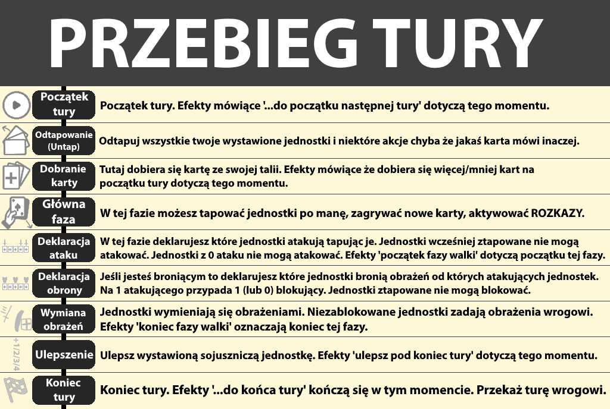

Zasady Gry i Wstęp
O Grze
SOLDREC to gra o walce przeprowadzana w Soldwersum, czyli uniwersum postaci i historii stworzonych przez osobę o pseudonimie Soldik. W tej grze wybierasz swoją główną postać (operatora) przy użyciu którego, razem z 60-karcianą talią, próbujesz zniszczyć swoich wrogów.
Informacje
Nazwa: SOLDREC
Liczba Graczy: 2-4
Czas gry: 1h-3h
Ocena Wiekowa: PEGI 12
Opisy Zawartości:
-Przemoc
-Strach
-Wulgarny Język
Producent: Fnold
Przed Grą
Aby zacząć grę, każdy z graczy musi mieć przygotowaną talię złożoną z min. 60 kart oraz z wybranym operatorem. Utworzone talie mogą zawierać jakiekolwiek karty z gry oraz mogą mieć do 100 kart. Ważna jest jednak zasada 50:50 tzn. każda talia musi mieć równo tyle akcji ile ma jednostek i vice versa. Operatorem może być jakakolwiek jednostka z dużym polem tekstowym. Do jednostek w talii można dawać zwykłe jednostki oraz operatorów o ile ci drudzy nie mają gwiazdki w typach.
Przebieg
Należy losowo wybrać gracza zaczynającego. Każdy z graczy kładzie talię obrazkiem w dół i tasuję ją. Nad nią każdy kładzie swojego wybranego operatora obrazkiem w górę. Pod talią jest cmentarz. Ustaw zdrowie każdego z graczy na 100/100.
Następnie każdy gracz dobiera 7 kart. Jeżeli dobrana ręka nie jest zadowalająca to można ją wymienić na nową tylko że 1 kartę mniej np. po jednej wymianie dobiera się 6 kart, po dwóch 5 itd.
Zaczynając od wybranego wcześniej gracza i postępując turowo, na początku pierwszej tury należy zagrać z ręki jednostkę której każdy z kosztów zagrywania (położonych w lewym dolnym rogu na jednostkach, w prawym górnym na akcjach) nie przekracza 10. Każda jednostka ma 4 statystyki (od góry): SIŁA, IQ, POPULARNOŚĆ, ŻYCIE.
W turze gracz kogo jest tura może ztapować swoje jednostkę (obrócić o 90 stopni) aby wytworzyły one tyle MANY ile ta jednostka ma IQ (żarówka w statystykach). MANA jest potrzebna do zagrywania reszty kart z ręki. Tyle ile ta jednostka ma POPULARNOŚCI (wykres w statystykach) tyle generuje ona pasywnie POPULARNOŚCI, ona także jest potrzebna do zagrywania reszty kart z ręki. Za koszty zagrywania podane wyżej (i nie tylko!) można zagrać swojego operatora, nie można tego jednak zrobić w pierwszej turze. Aby zagrać kartę musisz spełnić jej koszty zagrywania, jeśli się uda to możesz ją wystawić z ręki na stół, opróżnij przy tym wtedy z każdego zasobu tyle ile ta karta kosztowała (np. MANA) oprócz POPULARNOŚCI. Przy każdym zagraniu twojego operatora każdy z jego kosztów zagrywania wzrasta o 2. Jeżeli nie stać cię na inna kartę z ręki oprócz startowej jednostki to nie ma co się martwić. Pod koniec każdej tury gracz kogo jest tura wybiera sobie swoją jednostkę i zwiększa jej wybraną statystykę o 1. Kończy się wtedy tura.
Od drugiej i każdej następnej tury każdego gracza ten gracz na początku tury odtapowywuje wszystkie swoje jednostki i dobiera 1 kartę oraz może atakować innych graczy. Atakowanie polega na ztapowaniu pojedyńczych twoich jednostek w twojej turze, jednostek które nie były ztapowane, aby powołać je do ataku. Dla każdej jednostki wybiera się wroga w którego atakuje. Następnie, każdy z wrogów w których idzie atak wybiera opcję blokowanie ataku lub stracenia tyle zdrowia ile suma SIŁ wszyskich atakowany w tego wroga jednostek. Aby zablokować atak, gracz atakowany wybiera swoją odtapowaną jednostkę i przydziela ją do atakującej jednostki. Robi to tyle razy ile chce, jedna jednostka może blokować jedną atakującą jednostkę. Po tym każda jednostka blokująca traci tyle ŻYCIA ile SIŁY ma jednostka atakująca. W przypadku nadwyżki gracz traci tyle zdrowia ile jest nadwyżki. Gracz blokujący traci tyle zdrowia ile wynosi SIŁA atakujących go niezablokowanych jednostek.
Każda z tur przebiega zgodnie z kartką "PRZEBIEG TURY":

Każda z akcji ma swoje "tempo", jest ono umieszczone pod obrazkiem na akcji:
-NATYCH. - Efekt z opisu tej akcji dzieje się od razu po zagraniu.
-ROZKAZ - Efekt tej akcji nie może zadziałać w tej samej turze w której została zagrana ale może zostać aktywowana w dowolnym momencie w każdej przyszłej turze osoby która zagrała tę akcję. Akcje z tym tempem mogą mieć ładunki. Pozwalają one użyć efektu akcji wiele razy. Ładunki działają zgodnie z zasadami ROZKAZu, można użyć wszystkie ładunki od razu po sobie w jednej turze.
-SCENARIUSZ - Te akcje mają efekty które odblokowywują się i aktywują za każdym razem, gdy wykonana zostanie czynność z początku opisu karty. Po wykonaniu ostatniego poziomu akcja trafia na cmentarz.
Akcje z pustym tempem działają wszechczasowo przez całą grę dopóki nie trafią na cmentarz.
Jak Zakończyć Grę
Gra kończy się gdy jeden z graczy wygra grę za pomocą kart które mówią że można wygrać LUB gdy każdy inny gracz przegrał grę.
Wygrywa się natychmiastowo grę gdy:
-Jest się jedynym graczem w grze,
-Jedna z kart mówi że wygrano grę.
Przegrywa się natychmiastowo grę gdy:
-Ma się wystawionych 0 jednostek po swojej stronie,
-Ma się 0 lub mniej życia,
-Jedna z kart mówi że przegrano grę.
Gdy ktoś wygra grę, gra natychmiastowo się kończy. Gdy ktoś przegra grę, gra toczy się dalej dopóki ktoś nie wygra.